GLICD
Le menu des Applications :
Le site Xfce.
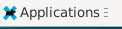
Le menu des Applications permet d'accéder aux applications installées.
Les applications sont rangées par thème (Accessoires, Bureautique, Graphisme, etc...)
Il se peut que des applications se retrouvent dans des thèmes différents.
Tableau de bord 1 du bureau xfce, celui du haut.

En haut à gauche de l'écran : Simple clic > Applications

Simple clic > Applications, puis simple clic > Emulateur de Terminal

- L'émulateur de Terminal donne accés à la ligne de commande, qu'on ne verra pas dans ce mémo.
Un exemple : En minuscule, saisir parole > valider avec la touche du clavier Entrée

- Quitter l'application « Parole » comme vu ci-dessus.
Quitter le Terminal : simple clic > Fichier (en haut à gauche) puis simple clic > Fermer la fenêtre
Simple clic > Applications, puis simple clic > Gestionnaire de fichier
Le gestionnaire de fichiers Thunar s'ouvre. (consulter ici)
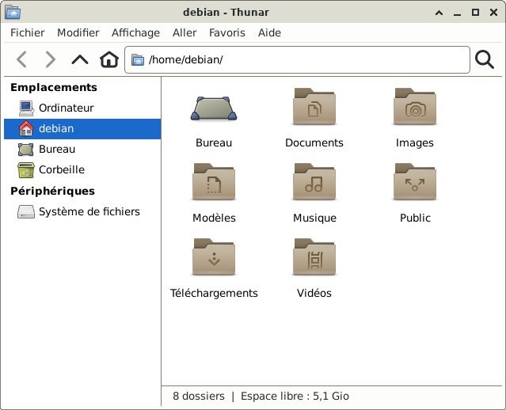
- Quitter le Gestionnaire de fichiers :
Simple clic > Fichier (en haut à gauche) puis simple clic > Fermer la fenêtre
Simple clic > Applications, puis simple clic > Client de messagerie
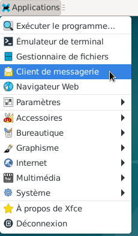
- Lors de l'installation, le client de messagerie n'est pas installé.
Exemple de client de messagerie : Thunderbird permet de recevoir les Emails directement sur le PC
Simple clic > Annuler
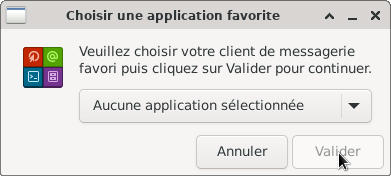
Simple clic > Applications, puis simple clic > Navigateur Web
(attendre que le navigateur s'ouvre)
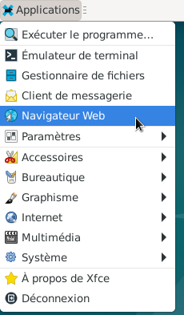
- Le navigateur installé ici est Firefox
Le navigateur permet principalement d'accéder à internet.
Fermer le navigateur : simple clic > petite croix en haut à droite
- Simple clic > Applications, positionner le pointeur de la souris sur Paramètres
Accès à toutes les applications pour paramétrer le système
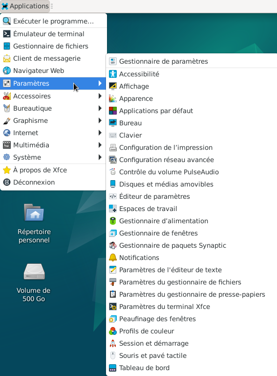
- Positionner le pointeur de la souris sur Accessoires
Accès à des applications comme la capture d'écran ou le logiciel de gravure Xfburn qu'on retrouvera
aussi dans le menu Multimédia.
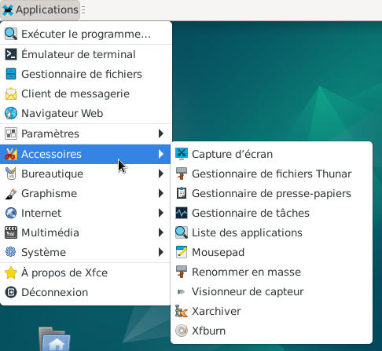
- Positionner le pointeur de la souris sur Bureautique
Accès à toutes les applications de bureautique comme LibreOffice ou visionneur de documents.
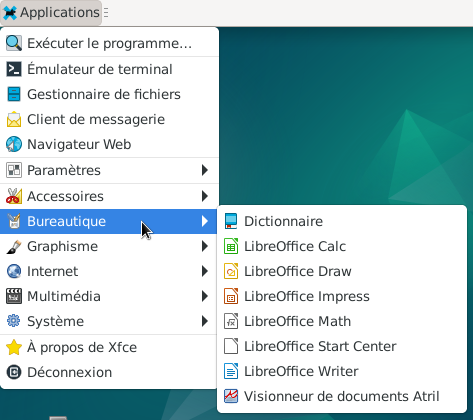
- Positionner le pointeur de la souris sur Graphisme
Accès à toutes les applications de graphisme comme la numérisation de scanner ou aussi visionneur de documents.
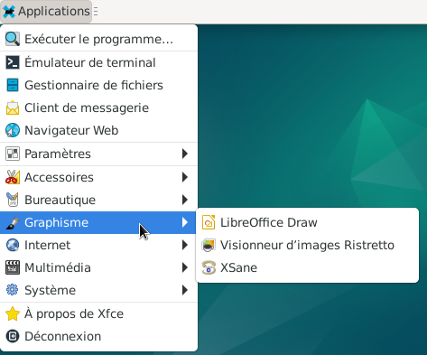
- Positionner le pointeur de la souris sur Internet
Accès à toutes les applications d'une connexion externe comme par exemple Firefox ou une application pour ouvrir un appareil amovible.
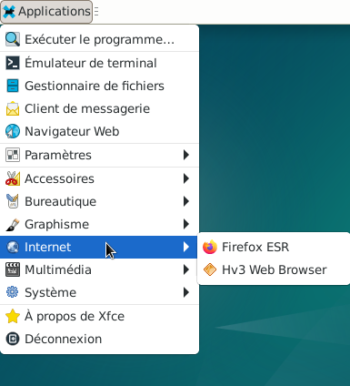
- Positionner le pointeur de la souris sur Multimédia
Accès à toutes les applications de multimédia comme Parole ou le contrôle du volume avec PulseAudio.
Exemple : Simple clic > "Lecteur Multimédia Parole" l'application s'ouvre.

- Positionner le pointeur de la souris sur Système
Accès à toutes les applications système comme Synaptic pour les mises à jour ou configurer une imprimante.

- Pour quitter le menu déroulant "Applications" qui reste affiché, positionner le pointeur de la souris en dehors de
ce menu déroulant comme sur l'image ci-dessous et faire un simple clic.
Cette méthode est valable pour tous les menus déroulants qui restent affichés.
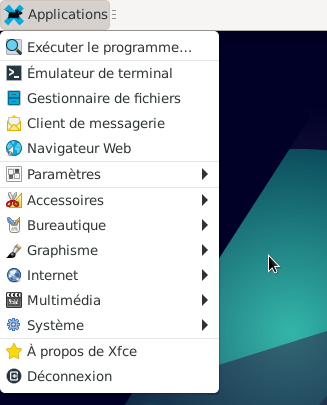
Simple clic > Applications, puis simple clic > A propos de Xfce
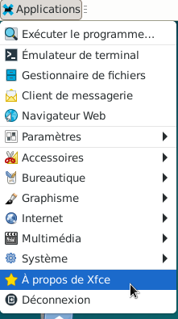
- Une fenêtre s'ouvre : A propos de l'environnement de bureau Xfce
Systeme : Diverses informations sur la version installée...
A propos : A propos de Xfce
Crédit, Debian, Copyright.
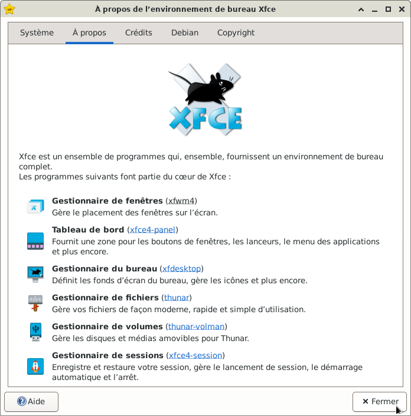
- Simple clic > Fermer
Simple clic > Applications, puis simple clic > Déconnexion
Il ne reste plus qu'à choisir : Eteindre, Redémarrer, Mise en veille, etc...
Ne pas quitter le bureau : Simple clic > Annuler
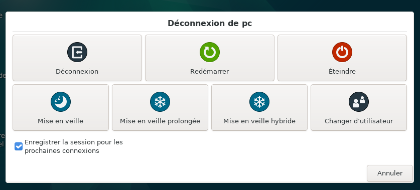
Une autre façon d'aller dans le menu Applications :
Retourner sur le bureau
Positionner le pointeur de la souris n'importe où sur le bureau mais pas sur un icône.
Clic droit

- Un menu déroulant s'ouvre.
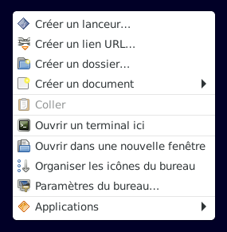
- Positionner le pointeur de la souris sur « Applications », la liste des applications apparaît.
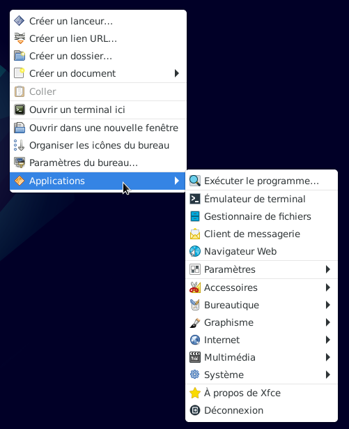
- Pour fermer ce menu, simple clic en dehors de cette fenêtre, comme vu plus haut.

Retour
Informations sur le logiciel libre et
Merci.
Marques déposées :
Ce site ne fait pas partie de Debian, n'est pas produit par le projet
Debian, ni approuvé par le projet Debian.
Ce site n'est pas affilié à Debian. Debian est une marque déposée appartenant
à Software in the Public Interest, Inc.
Contribuer :
Ce site ne fait pas partie de XFCE, n'est pas produit par le projet
XFCE, ni approuvé par le projet XFCE.
Ce site n'est pas affilié à XFCE.
Ce site est juste réalisé par un passionné.